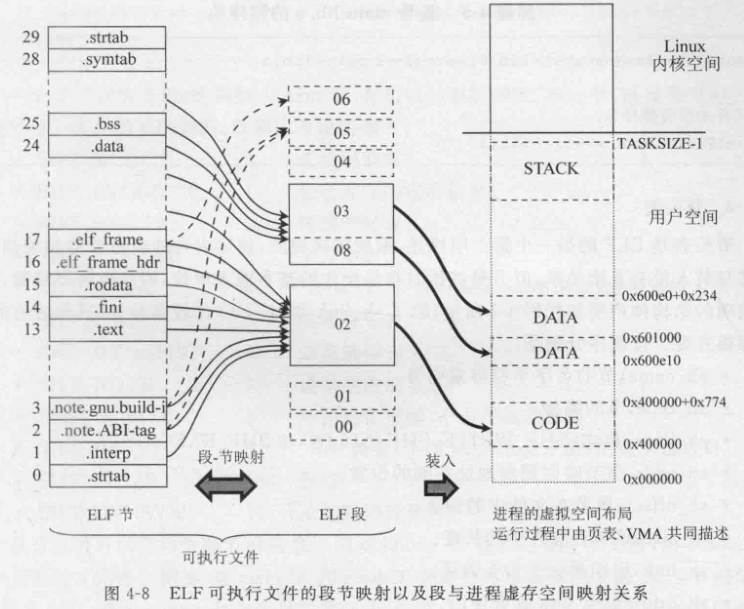
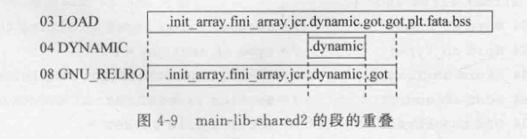

GCC
注意区分gnu c和ansi/iso c
gcc使用时需要指定头文件搜索路径，链接库的搜索路径和库名
运行得到的可执行文件时，通过LD_LIBRARY_PATH搜索动态库文件
ldconfig负责从/etc/ld.so.conf.d/*.conf更新库搜索路径
为了使用自己的动态库，要么修改环境变量，要么（在可选地编辑conf后）需要运行ldconfig
ELF格式承载了两个用途
可执行文件和可重定位文件
在可执行文件中，注重程序段（程序段应该是从节“组成”出来的）的概念
在可重定位文件中，注重节的概念
.bss这种节（存放了已声明未初始化的全局变量）中的变量不需要初始化，因此会出现程序段的段大小memsz大于filesz的情况


这里03段包含08段，重定位修改后，08段权限会变，因此出现进程地址空间中段数目和elf中load类型段数目不同的情况
所有节名都存放在shstrtab中，每个节中只存放其节名在shstrtab中的索引
not stripped符号表未抽离
需要在节中记录的有两个
代码
全局变量（分为有定义和没有定义的）（也包含static局部变量）
对于本模块内的符号，只需要重定位
对于模块外定义的符号，需要先进行跨模块的符号解析再重定位
重定位表
或者说是重定位段
对每个需要重定位的段都有一个对应的重定位表
如.text对应.rela.text
重定位表中每个entry代表一个符号的引用，记录了该引用（相对于它所在的段的）偏移，类型和在符号表中的对应。
符号表
.symtab节
符号的定义
其中每个符号的名字存储的是.strtab节的下标
其中UND类型是未解析，即需要寻找定义的
nm工具也可以用来看符号表
静态链接
（如果不存在外部符号）可重定位文件缺少操作系统提供的初始化代码和返回到系统的代码，并且每个节都欠重定位（每个节都从0开始）。仍然是不能“用”的
一般地，链接=布局+符号解析+重定位
布局
综合所有目标文件的节加上启动和结束代码的节，合并相同属性的节
得到代码和数据的地址
符号解析
处理UND符号
静态库是目标文件的集合（不再是ELF了？），静态链接时抽取其中必要的目标文件
动态链接
链接时需要动态库，但不会将动态库的代码和数据包含进可执行文件
运行时需要动态库，这时载入动态库代码和数据到进程空间，并进行重定位
延迟了重定位操作到装入阶段
动态库中已经形成了“布局”
PIC position independent code
~~动态库中所有数据地址和跳转地址都是PC相对的 ~~
数据的相对跳转的实现是通过GOT表这个中介间接访问
需要为动态库中的全局变量在可执行文件的.bss中分配空间，因为动态库的全局变量不跨进程共享，在动态库的.data和.bss中存了初值
函数的相对跳转是先转移到函数的plt版本（称为trampoline）动态，根据got表中内容
重定位前（由于got表这么规定，只是跳转到了下一行）是push plt下标到栈里，然后跳转到公共入口
重定位后能根据got表直接跳转到那个函数
.rela.dyn是数据动态重定位表，.rel.plt函数
.got是数据GOT表，.got.plt函数
动态链接和静态链接下，数据重定位表的区别是前者存放GOT表项地址，后者存放引用的指令地址
加载器加载动态链接的可执行文件
可执行文件中.interp节指定了动态链接器的路径，由它来操作
表达式的“值类别”（value category）和“值类型”（value type）
前者指的是左值、右值，后者则是与引用类型（reference type）相对而言，表明一个变量是代表实际数值，还是引用另外一个数值。在C++里，所有的原生类型、枚举、结构、联合、类都代表值类型，只有引用和指针才是引用类型。在 Java 里，数字等原生类型是值类型，类则属于引用类型。在Python 里，一切类型都是引用类型。
赋值函数重载
支持左/右值
支持a=a
“拷贝并交换”惯常做法
smart_ptr&
operator=(smart_ptr rhs) noexcept
{
rhs.swap(*this);
return *this;
}引用折叠
对于template <typename T> foo(T&&) 这样的代码
如果传递过去的参数是左值，T 的推导结果是左值引用；如果传递过去的参数是右值，T 的推导结果是参数的类型本身。
如果 T 是左值引用，那 T&& 的结果仍然是左值引用——即 type& && 坍缩成了type&。
如果 T 是一个实际类型，那 T&& 的结果自然就是一个右值引用。
T&&保持了值类型，万能引用/转发引用
为了保持值类型不变，可以使用std::forward
使用auto推断类型需要自己决定使用值类型还是引用类型
decltype(auto)可以直接转发？